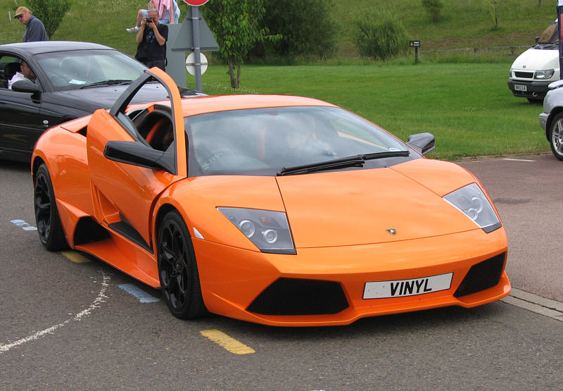

Here are the available cars in our storage facility.
Lamborghini Diablo SV 1999 (530 HP)Lamborghini launched a facelifted Diablo in 1999. The most immediately noticeable exterior change was the replacement of the previous Diablo’s pop-up headlamp units with fixed composite lenses. All Diablos were also fitted with new 18 inch wheels. The Diablo range also received an updated interior. The V12 powerplant was stretched tp 529 hp and 446 lb ft of torque for both the SV and VT models and now featured variable valve timing. For the first time in a Lamborghini, the Diablo was equipped with a Kelsey-Hayes ABS unit, complementing larger diameter brake rotors. |
|

|
Porsche 911 GT3 RS 2018 (520 HP)The 2018 Porsche 911 GT3 RS. With a mesmerizing 520 hp, the capacity to hit 0-60 mph in 3 seconds, and a striking pair of titanium tailpipes, the new 911 GT3 RS delivers unadulterated sound and authentic performance. |
|  |
Lamborghini Murcielago LP-640 2010 (632 HP)The Lamborghini Murcielago LP640, named for a legendary fighting bull, is an Italian high-performance exotic supercar. Its characteristic scissor doors open upwards in signature Lamborghini style. Electronically-controlled air scoops, located behind the doors, open depending on engine temperature and need for cooling air. |
Honda Civic Type-R 2018 (306 HP)The Civic Type R delights with an impeccable powertrain. Its exclusive turbocharged 2.0-liter inline-four makes a healthy 306 hp and 295 lb-ft of torque. The engine exhibits exceptionally linear power, and the short-throw six-speed manual gearbox is effortless and engaging. This combo drives the front wheels through a limited-slip differential, which helps manage wheelspin for optimal traction, while the dual-axis front suspension virtually eliminates torque steer. |
|
Nissan Skyline GT-R V-spec II 2000 (BNR34)The 10th generation Skyline R34 was rolled out in 1998. The body had high rigidity to improve motion performance while securing enough interior space in a smaller body. Its highest-level performance model “GT-R” was released in 1999. “V⋅spec” was the center of talks due to higher traveling performance achieved by exclusive aero parts, specifically tuned suspensions and active LSD, and styling like a racing car. |
|
Toyota Supra RZ MKIVBuilt between 1993 and 2002, The Toyota Supra MkIV offered two different engine options; a naturally aspirated 2JZ-GE, 3.0-litre, straight 6 with 220 horsepower, and a 2JZ-GTE 3.0-litre twin-turbocharged straight 6 with 280 horsepower. |